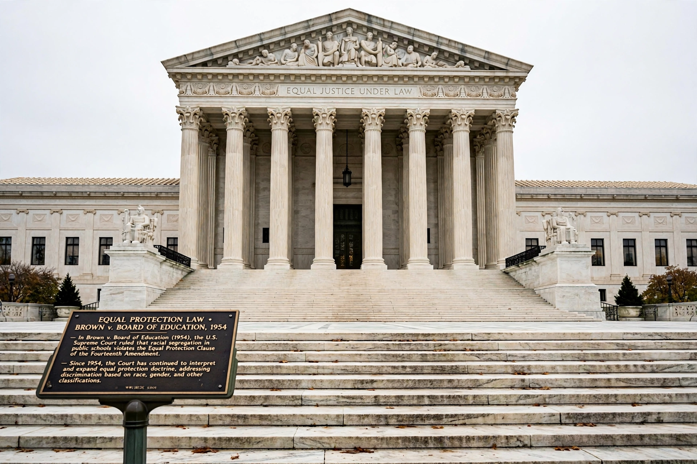

Equal Protection Clause
From Wikipedia, the free encyclopedia

The Equal Protection Clause is part of Section 1 of the Fourteenth Amendment to the US Constitution: 'nor shall any State […] deny to any person within its jurisdiction the equal protection of the laws.' Ratified in 1868 to secure the citizenship and rights of the formerly enslaved, it lay largely dormant after Reconstruction's collapse, then became — from Brown v. Board of Education (1954) onward — the engine of modern American equality law.
Doctrine
Modern doctrine sorts classifications into tiers: race, national origin and fundamental rights trigger strict scrutiny; sex and legitimacy, intermediate scrutiny; most economic regulation only rational-basis review. Landmarks include Brown (school segregation), Loving v. Virginia (1967, interracial marriage), Reed v. Reed (1971, sex), Plyler v. Doe (1982, undocumented children) and Obergefell v. Hodges (2015, marriage equality, with due process). Federal action is reached through the Fifth Amendment's due process (Bolling v. Sharpe, decided with Brown).
Contests
The Clause has been the battleground of affirmative action — Bakke (1978), Grutter (2003), and Students for Fair Admissions v. Harvard (2023), which ended race-conscious admissions — and of debates between formal equality (colour-blindness) and antisubordination readings. Whether it constrains private action (no: the state-action doctrine) and how it treats disparate impact (Washington v. Davis, 1976: intent required) remain structuring controversies.